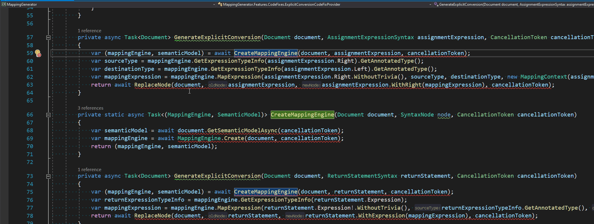

Async code smells and how to track them down with analyzers - Part II

This blog post continues the series which is a guide through the code analyzers available on the market and their possibilities. I’m trying to help you answer the question: “Which analyzer package should I use and how to configure it to avoid problems related to async/await?”. In the previous episode, I presented the first seven most common code smells related to asynchronous programming. Today, I present the next seven traps from this area. Lucky you, they can be easily avoided with an appropriate analyzer - for every issue, I provide entries for .editorconfig that configure analyzers that can detect it. Links to NuGet packages, as well as a complete list of analyzers’ rules, can be found in the previous article.
Async Code Smells 🔗︎
8. Synchronous waits 🔗︎
async/await keywords are viral, which means if you want to await asynchronous expression and you are in the non-asyc method, then you are forced to rewrite the whole call chain to asynchronous. The easier solution seems to be calling Wait or Result on the returned task but it’s just asking for trouble. This solution will cost you two threads for that execution, or even result in a deadlock. This problem is more widely described in
ASP.NET Core Diagnostic Scenarios - Asynchronous Programming. I highly recommend reading this article - you will find there even more asynchronous code smells.
❌ Wrong
void DoSomething()
{
Thread.Sleep(1); // Reported diagnostics: MA0045
Task.Delay(2).Wait(); // Reported diagnostics: VSTHRD002, MA0045
var result1 = GetAsync().Result; // Reported diagnostics: VSTHRD002, MA0045, AsyncifyInvocation
var result2 = GetAsync().GetAwaiter().GetResult(); // Reported diagnostics: VSTHRD002, MA0045
var unAwaitedResult3 = GetAsync();
var result3 = unAwaitedResult3.Result; // Reported diagnostics: VSTHRD002, MA0045, AsyncifyVariable
}
✔️ Correct
async Task DoSomething()
{
await Task.Delay(1);
await Task.Delay(2);
var result1 = await GetAsync();
var result2 = await GetAsync();
}
🛠️ Configuration
# VSTHRD002: Avoid problematic synchronous waits
dotnet_diagnostic.VSTHRD002.severity = error
# MA0045: Do not use blocking call (make method async)
dotnet_diagnostic.MA0045.severity = error
# AsyncifyInvocation: Use Task Async
dotnet_diagnostic.AsyncifyInvocation.severity = error
# AsyncifyVariable: Use Task Async
dotnet_diagnostic.AsyncifyVariable.severity = error
Asyncify package has a very simple diagnostic - it only detects usage of Task.Result property. However, it has a very powerful code fix which can automatically rewrite the whole synchronous call chain to the one that uses async/await keywords:
vs-threading has a similar code fix, unfortunately right now it is totally broken Issue #454.
9. Missing ConfigureAwait(bool) 🔗︎
By default, when we await asynchronous operation using the await keyword, the continuation is scheduled using captured SynchronizationContext or TaskScheduler. This comes with additional performance cost and might result in a deadlock, depending on the SynchronizationContext/TaskScheduler provided by the environment - especially in WindowsForms, WPF and old ASP.NET application (yes, ASP.NET Core is not using SynchronizationContext). ConfigureAwait method wraps returned task into ConfiguredTaskAwaitable structure which changes the logic of scheduling the continuation. By calling ConfigureAwait(continueOnCapturedContext: false) we are ensuring that the current context (if provided) is ignored while invoking the continuation. Setting continueOnCapturedContext parameter to true doesn’t make any sense. If you want to go into the details about this subject, I recommend reading ConfigureAwait FAQ by Stephen Toub.
❌ Wrong
async Task DoSomethingAsync()
{
await DoSomethingElse(); //Reported diagnostics: ASYNC0004, MA0004, RCS1090, VSTHRD111, CA2007
}
✔️ Correct
async Task DoSomethingAsync()
{
await DoSomethingElse().ConfigureAwait(false);
}
🛠️ Configuration
# ASYNC0004: Use ConfigureAwait(false) on await expression
dotnet_diagnostic.ASYNC0004.severity = error
# MA0004: Use .ConfigureAwait(false)
dotnet_diagnostic.MA0004.severity = error
# RCS1090: Call 'ConfigureAwait(false)'.
dotnet_diagnostic.RCS1090.severity = error
# VSTHRD111: Use ConfigureAwait(bool)
dotnet_diagnostic.VSTHRD111.severity = error
# CA2007: Consider calling ConfigureAwait on the awaited task
dotnet_diagnostic.CA2007.severity = error
All of the above analyzers offer appropriate code fixes. You can easily add “ConfigureAwait(false)` to all await expressions in one go:

10. Returning null from a Task-returning method 🔗︎
Returning null value from a non-async method that declares Task/Task<> as a returning type results in NullReferenceException if somebody awaits the method invocation. To avoid that, you should always return the result from this kind of method using Task.CompletedTask or Task.FromResult<T>(null) helpers.
❌ Wrong
Task DoAsync()
{
return null; //Reported diagnostics: MA0022, VSTHRD114
}
Task<object> GetSomethingAsync()
{
return null; //Reported diagnostics: MA0022, VSTHRD114, RCS1210
}
Task<HttpResponseMessage> TryGetAsync(HttpClient httpClient)
{
return httpClient?.GetAsync("/some/endpoint"); //Reported diagnostics: RCS1210
}
✔️ Correct
Task DoAsync()
{
return Task.CompletedTask;
}
Task<object> GetSomethingAsync()
{
return Task.FromResult<object>(null);
}
Task<HttpResponseMessage> TryGetAsync(HttpClient httpClient)
{
return httpClient?.GetAsync("/some/endpoint") ?? Task.FromResult(default(HttpResponseMessage));
}
🛠️ Configuration
# MA0022: Return Task.FromResult instead of returning null
dotnet_diagnostic.MA0022.severity = error
# RCS1210: Return Task.FromResult instead of returning null.
dotnet_diagnostic.RCS1210.severity = error
# VSTHRD114: Avoid returning a null Task
dotnet_diagnostic.VSTHRD114.severity = error
Right now, none of the analyzers is able to detect all three cases, so we should go with one of two combinations: RCS1210 with VSTHRD114 or RCS1210 with MA0022.
11. Asynchronous method names should end with Async 🔗︎
I’m not a fan of this rule. It adds unnecessary noise and reminds me of the hungarian notation. In the description of VSTHRD200 we can see:
The .NET Guidelines for async methods includes that such methods should have names that include an "Async" suffix.
However, I wasn’t able to find the original document and there’s nothing about it in the Framework Design Guidelines - Naming Guidelines. IMHO, this naming convention only makes sense when a class provides both synchronous and asynchronous versions of a given method - this is the case mostly for APIs that were created before the async/await era. Anyway, if this rule belongs to your coding standard, you can easily spot all the violations with the following diagnostics: VSTHRD200, ASYNC0001, RCS1046.
❌ Wrong
async Task DoSomething() //Reported diagnostics: VSTHRD200, ASYNC0001, RCS1046
{
await Task.Yield();
}
✔️ Correct
async Task DoSomethingAsync()
{
await Task.Yield();
}
🛠️ Configuration
# ASYNC0001: Asynchronous method names should end with Async
dotnet_diagnostic.ASYNC0001.severity = error
# VSTHRD200: Use "Async" suffix for async methods
dotnet_diagnostic.VSTHRD200.severity = error
#RCS1046: Asynchronous method name should end with 'Async'.
dotnet_diagnostic.RCS1046.severity = error
12. Non asynchronous method names shouldn’t end with Async 🔗︎
This rule definitely makes more sense for me than the previous one. Adding Async suffix to the non-asynchronous method might cause confusion. I think this code smell is rather a result of careless refactoring or requirement changes than intended action.
❌ Wrong
void DoSomethingAsync() //Reported diagnostics: VSTHRD200, ASYNC0002, CS1047
{
}
✔️ Correct
void DoSomething()
{
}
🛠️ Configuration
# VSTHRD200: Use "Async" suffix for async methods
dotnet_diagnostic.VSTHRD200.severity = error
# ASYNC0002: Non asynchronous method names should end with Async
dotnet_diagnostic.ASYNC0002.severity = error
# RCS1047: Non-asynchronous method name should not end with 'Async'.
dotnet_diagnostic.RCS1047.severity = error
It’s worth pointing out that VSTHRD200 is tracking both naming deviations, it simply checks if the Async suffix is applied correctly. It might be good if you need both rules, but if you just need to check if the Async suffix is not applied to synchronous methods, then you should rather use ASYNC0002 or RCS1047.
13. Pass cancellation token 🔗︎
Forgetting about passing the cancellation token might cost you a lot of trouble. Log running operation without a cancellation token can block the action of stopping the application or can result in thread starvation when there’s a lot of canceled web requests. To avoid such problems, you should always provide and pass a cancellation token to the methods that accept it, even if it’s an optional parameter. Meziantou.Analyzer package implements two diagnostics which can detect missing cancellation token: MA0032 is reported always when we skip cancellation token parameter and MA0040 is reported only when there’s a cancellation token in current scope that can be used. You can find more details about those analyzers in the article from analyzers author
Detect missing CancellationToken using a Roslyn Analyzer.
❌ Wrong
public async Task<string> GetSomethingA(HttpClient httpClient, CancellationToken cancellationToken)
{
var response = await httpClient.GetAsync(new Uri("/some/endpoint")); //Reported diagnostics: MA0040
return await response.Content.ReadAsStringAsync();
}
public async Task<string> GetSomethingB(HttpClient httpClient)
{
var response = await httpClient.GetAsync(new Uri("/some/endpoint")); //Reported diagnostics: MA0032
return await response.Content.ReadAsStringAsync();
}
✔️ Correct
public async Task<string> GetSomething(HttpClient httpClient, CancellationToken cancellationToken)
{
var response = await httpClient.GetAsync(new Uri("/some/endpoint"), cancellationToken);
return await response.Content.ReadAsStringAsync();
}
🛠️ Configuration
# MA0040: Specify a cancellation token
dotnet_diagnostic.MA0032.severity = error
# MA0040: Flow the cancellation token when available
dotnet_diagnostic.MA0040.severity = error
14. Using cancellation token with IAsyncEnumerable 🔗︎
This is a similar code smell as the previous one but it’s strictly related to the usage of IAsyncEnumerable and can be quite easily overlooked. It might not be so obvious, but passing a cancellation token to an asynchronous enumerator is done by calling WithCancellation() method. In the case of IAsyncEnumerable the Meziantou.Analyzer provides two diagnostics: MA0080 for all missing invocation of WithCancellation() method and MA0079 only when any CancellationToken is present in the current context.
❌ Wrong
async Task IterateB(IAsyncEnumerable<string> enumerable, CancellationToken cancellationToken)
{
await foreach (var item in enumerable) // Reported diagnostics: MA0079
{
}
}
async Task IterateA(IAsyncEnumerable<string> enumerable)
{
await foreach (var item in enumerable) // Reported diagnostics: MA0080
{
}
}
✔️ Correct
async Task Iterate(IAsyncEnumerable<string> enumerable, CancellationToken cancellationToken)
{
await foreach (var item in enumerable.WithCancellation(cancellationToken))
{
}
}
🛠️ Configuration
# MA0079: Use a cancellation token using .WithCancellation()
dotnet_diagnostic.MA0079.severity = error
# MA0080: Use a cancellation token using .WithCancellation()
dotnet_diagnostic.MA0080.severity = error
Summary 🔗︎
| # | Code smell | VS-Threading | Roslyn.Analyzers | Meziantou.Analyzer | Roslynator | FxCop | Asyncify |
|---|---|---|---|---|---|---|---|
| 8. | Synchronous waits | 🔎🛠️VSTHRD002 | 🔎MA0042, MA0045 | 🔎🛠️AsyncifyInvocation, AsyncifyVariable | |||
| 9. | Missing ConfigureAwait(bool) |
🔎🛠️VSTHRD111 | 🔎🛠️ ASYNC0004 | 🔎🛠️ MA0004 | 🔎🛠️RCS1090 | 🔎🛠️CA2007 | |
| 10. | Returning null from a Task-returning method | 🔎🛠️VSTHRD114 | 🔎MA0022 | 🔎🛠️RCS1210 | |||
| 11. | Asynchronous method names should end with Async | 🔎🛠️VSTHRD200 | 🔎🛠️ASYNC0001 | 🔎RCS1046 | |||
| 12. | Non asynchronous method names shouldn’t end with Async | 🔎🛠️ASYNC0002 | 🔎RCS1047 | ||||
| 13. | Pass cancellation token | 🔎MA0032,MA0040 | |||||
| 14. | Using cancellation token with IAsyncEnumerable | 🔎MA0079,MA0080 |
🔎 - Analyzer
🛠️ - CodeFix


{kind=link}